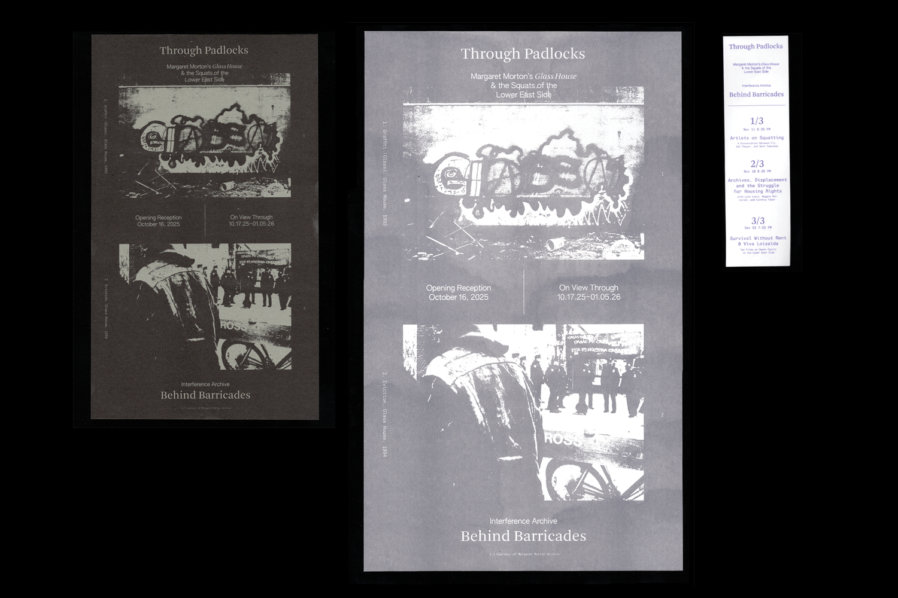
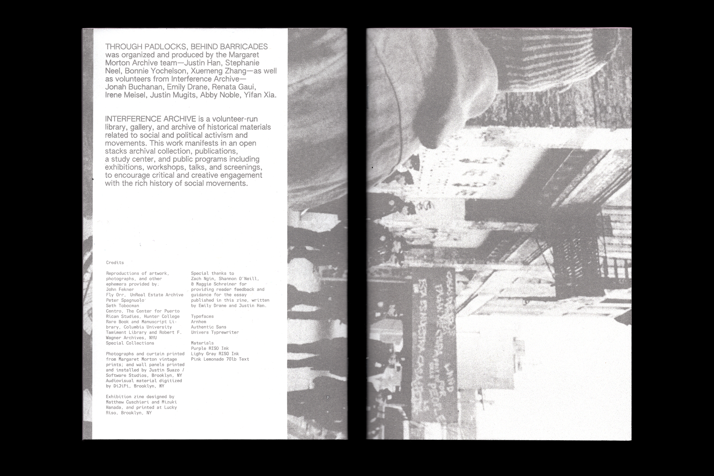
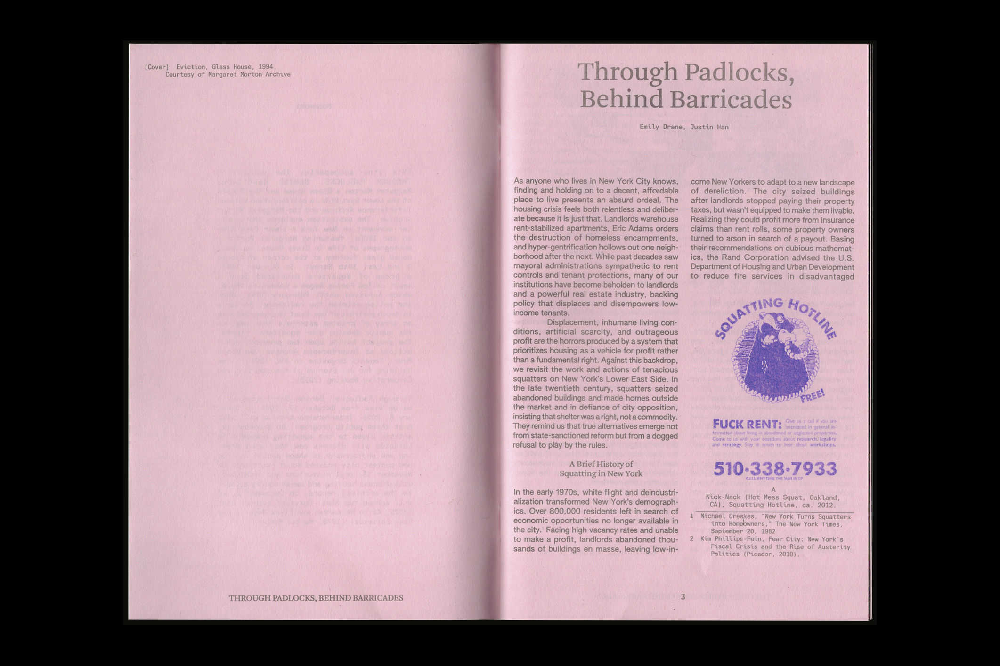
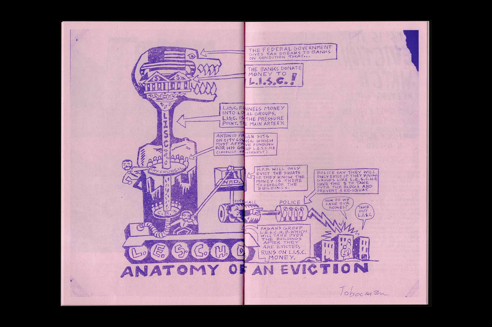
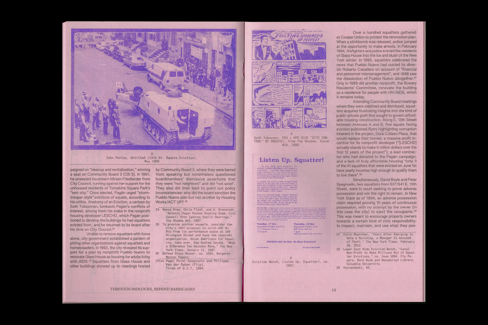
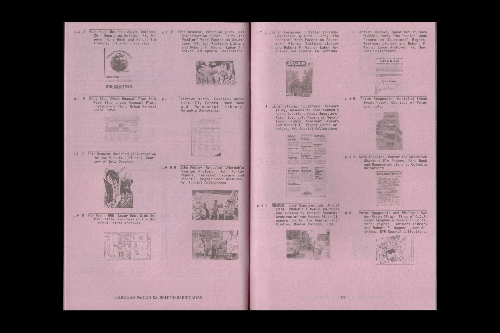
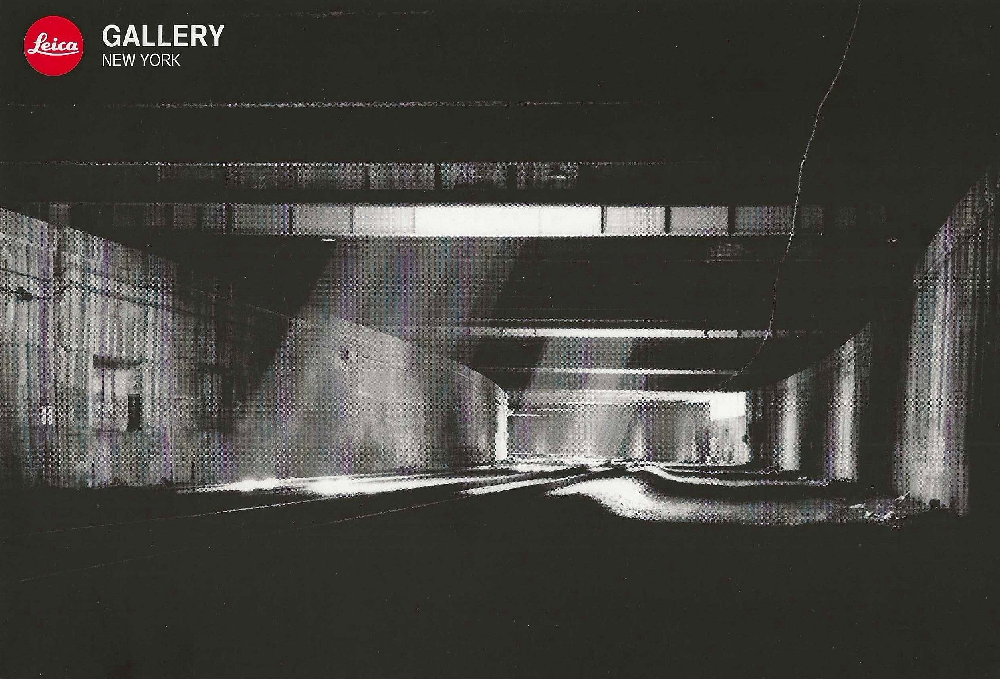
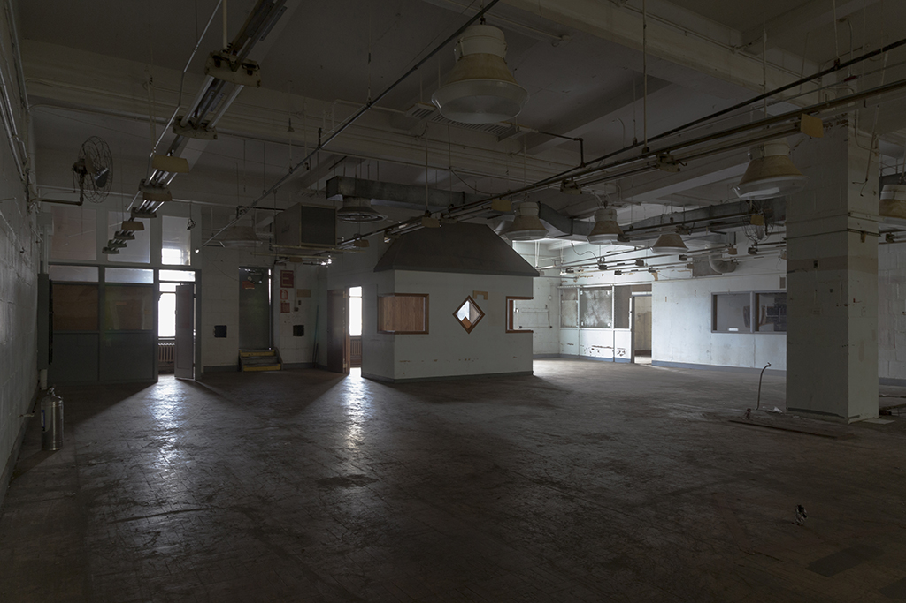
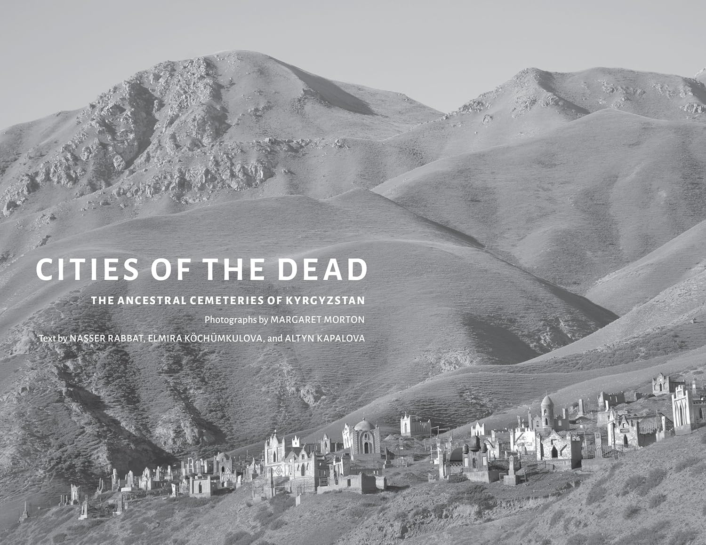

2025
Through Padlocks, Behind Barricades:
Margaret Morton's Glass House & the Squats of the Lower East Side
Interference Archive (Brooklyn, NY)
October 18 - January 08 (2026)






Through Padlocks, Behind Barricades explores the squatter movement on New York’s Lower East Side (Loisaida) in the 1990s. It features Margaret Morton’s photographs of life in Glass House, an abandoned glass factory at the corner of Avenue D and East 10th Street. Several dozen squatters made the building their home for sixteen months, until police evicted them in winter 1994. The exhibition presents Morton’s in-depth portrait of one squat, with an array of printed materials exploring the debates that arose over squatters’ rights. Interference Archive worked in partnership with the Margaret Morton Archive to produce the exhibition, an accompanying zine, two panel discussions and a film screening.
2015
Margaret Morton: A Retrospective
Leica Gallery (New York, NY)
June 26 – August 15

Morton's retrospective consisted of a selection of her photographs from the 1990s through 2015, including early projects in the Lower East Side and later works in Kyrgyzstan and Ukraine. The exhibition was curated by ? and presented at Leica Gallery.
Inside the Farley: Photographs by Margaret Morton*
Architectural League of New York (New York, NY)
xx xx - xx xx
See also this essay

Inside the Farley featured photographs of the James A. Farley Post Office...
Cities of the Dead: The Ancestral Cemeteries of Kyrgyzstan*
Ismaili Centre (Toronto, CA)
date date date

Cities of the Dead featured photographs of ancestral cemeteries in Kyrgyzstan...